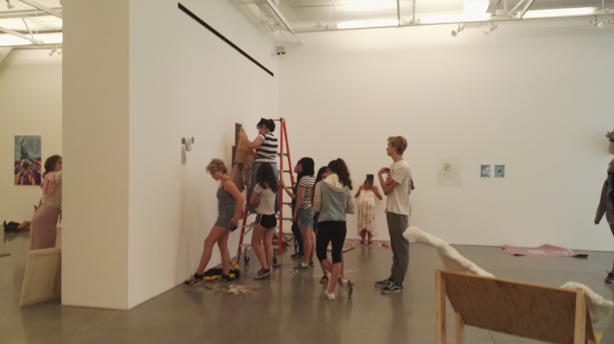
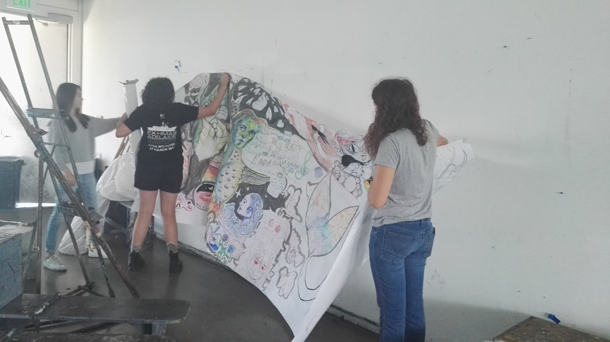
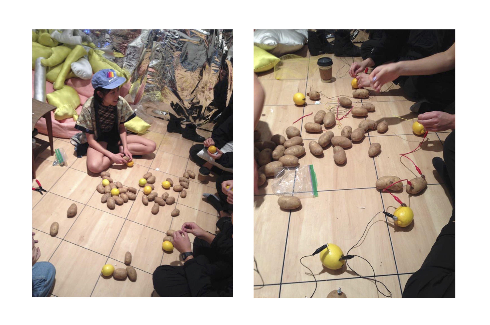
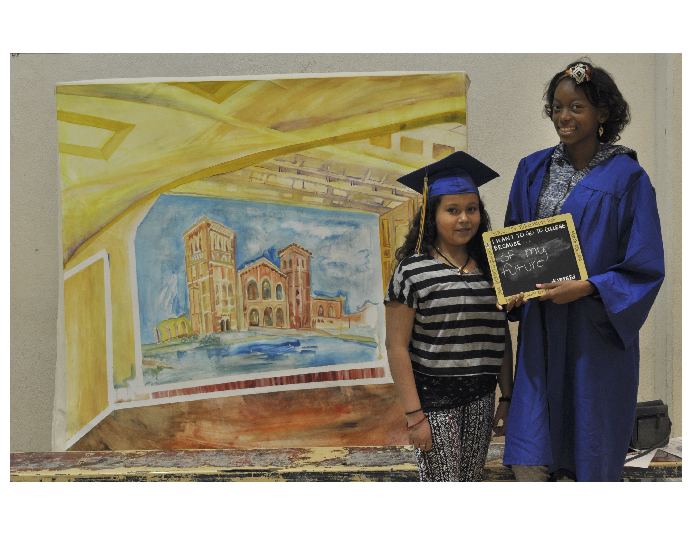
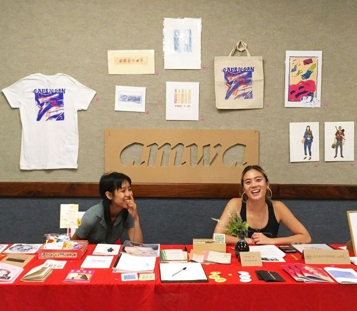
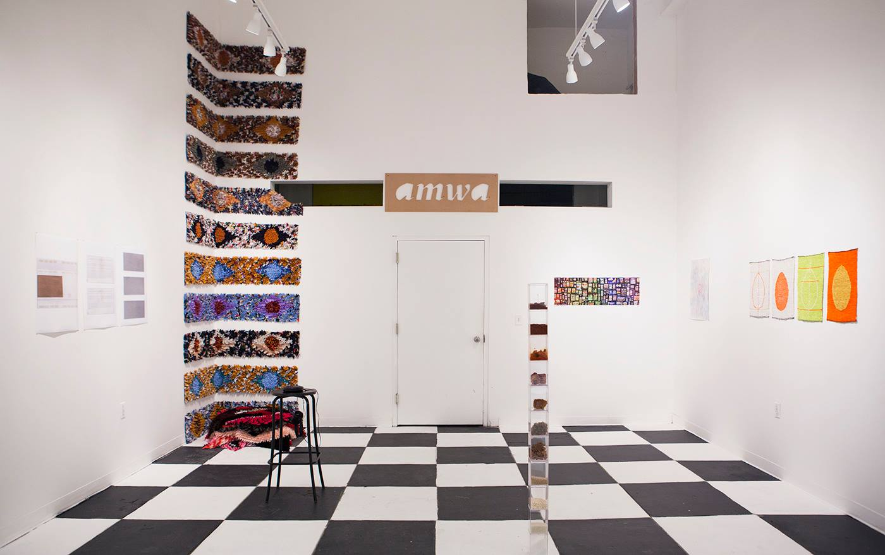
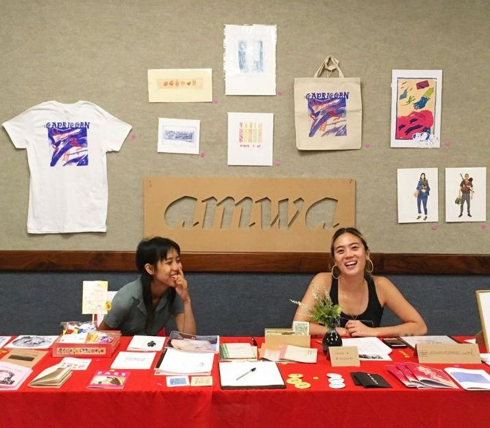
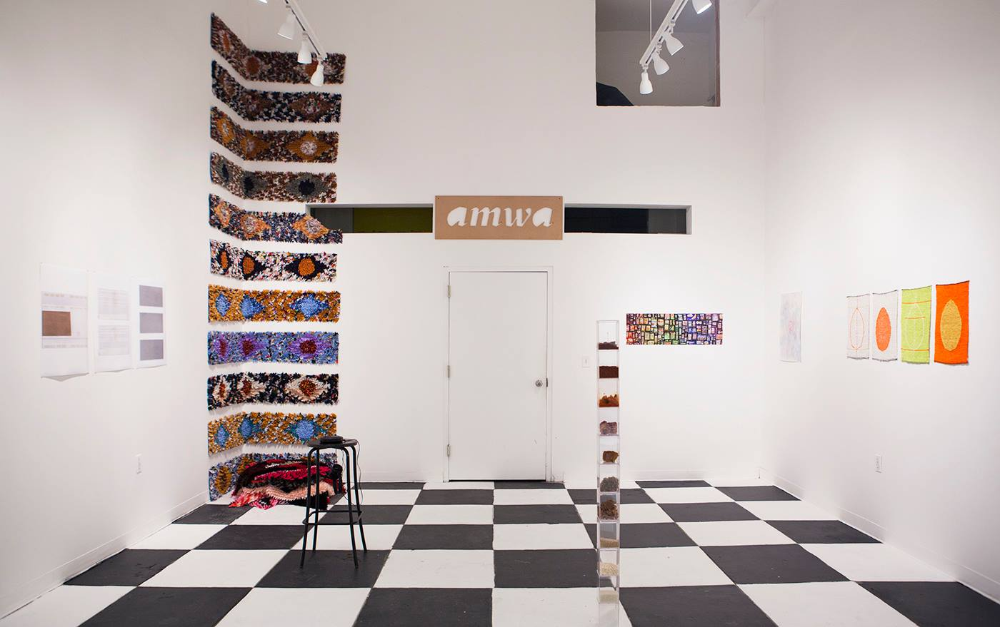
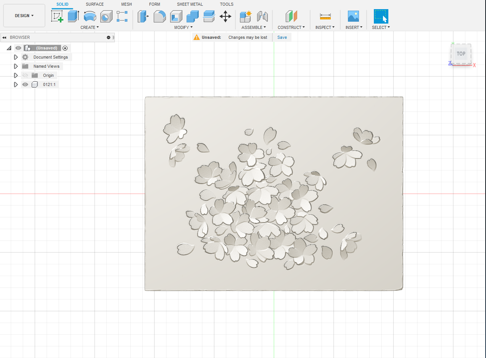
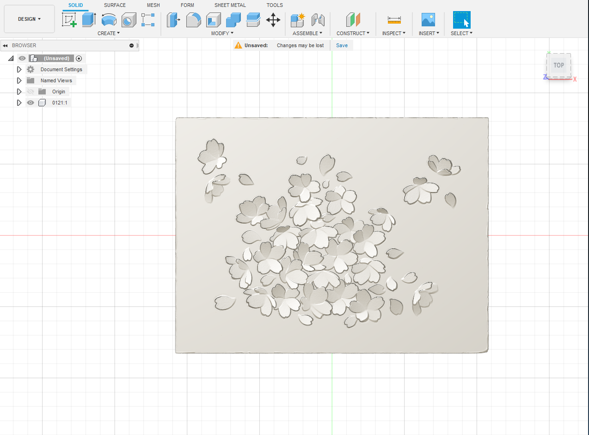

Young Artists Summer Camp at MoCA Shanghai (Lead Organizer) *click to see lessons and structure
UCLA Lab School Lesson Plan
 
Installation Day at UCLA Summer Arts Institute


Plein Air Painting with Homemade Bamboo Brushes

Taught workshop on making Potato Lemon Batteries for anyone who came into UCLA Wright Gallery




Students for Education Reform: Young Empowered Scholars Y.E.S to Education! College Readiness Event, helped organize event and created backdrop for photo booth event


 Facilitated group of 5-15 year olds in reciting Heart Sutra for a public chanting. Guided students in scriptwriting, filming, and acting for a 10-minute long film. Woodenfish Summer Camp, Beijing.
Facilitated group of 5-15 year olds in reciting Heart Sutra for a public chanting. Guided students in scriptwriting, filming, and acting for a 10-minute long film. Woodenfish Summer Camp, Beijing.
 





 
